结论速览
技术路线已确定为 uni-app + Vue 3 微信小程序优先；设计输入只有 13 张 JPG，无 Figma 文件。
| # | 问题 | 结论 |
|---|---|---|
| 1 | 开发语言 | 确定走 uni-app + Vue 3 + TypeScript，以微信小程序为主目标，H5/App 作为同一套代码的副产物。不再采用「先 H5 后迁移」的路线。 |
| 2 | 框架 | uni-app + Vue 3 + TypeScript + Vite + Pinia；UI 用 Wot Design Uni 或 uView Plus；图表用 uCharts；请求用 uni.request，路由用 pages.json。设备「能力模型」、场景「触发器 → 动作 → 执行状态」不变。 |
| 3 | 开发板块 | 10 个板块，但演示只围绕核心闭环：找设备 → 读状态 → 快操作 → 得反馈。最难的是场景执行器、设备状态一致性、配网状态机，不是页面本身。 |
| 4 | 演示做到哪 | 做到 B 级「可交互演示」，交付微信体验版二维码；用 UX 文档里的任务验收：3 秒内找到运行设备、设备操作 ≤2 步、每次操作有明确反馈。约 2 周，不需要真实硬件。 |
| 5 | 前后台 | 前台 = 微信小程序用户端；后台 = PC 管理端（演示可省）；中间是 API 适配层 + 模拟设备引擎。演示阶段前端 Mock 足够。 |
| 6 | 数据库 | 纯前端演示不需要。加轻后端用 SQLite；真实产品才需要 PostgreSQL/MySQL + Redis + 时序库（能耗）。关键是设备状态、场景执行记录与事件日志的建模。 |
| 7 | 其他建议 | 把 PDF2 的「状态前置、操作聚合、反馈明确」翻译成小程序规范；先做状态层和反馈层；只有图片没有 Figma，也能按第 10 节流程做高保真还原；埋点从第一天就加。 |
判断一
产品本质是「状态控制台」，不是遥控器合集。
用户要的是：家里现在怎么样、哪个设备在跑、点一下会怎样。
判断二
体验核心是「找、读、控、反馈」四步。
PDF2 的所有优化，最终都落在这四步的时间和确定性上。
判断三
开发难点在状态与反馈，不在页面数量。
状态不一致、操作没反馈、场景执行不可见，是演示最容易穿帮的地方。
产品定义：它到底解决什么问题
先还原产品，再谈技术。
产品文档给出的定义很明确：一站式全屋智能设备管理平台，覆盖 「设备控制 - 数据统计 - 场景联动 - 设备管理」全流程。它不是单一设备的遥控器， 而是以「家」为单位的状态与任务管理中心。
环境状态
温度、湿度、空气质量
回答「家里现在舒不舒服」。
设备状态
开关、模式、进度、剩余时间、在线状态
回答「哪个设备在干什么」。
任务状态
场景执行、清洁进度、配网步骤、能耗统计
回答「我发起的事进行到哪了」。
用户的核心工作可以压缩成一条链路：
这条链路也解释了为什么 PDF2 把优化目标定为「状态识别耗时、操作耗时、操作失误率」—— 它们正好对应链路的前三步，而反馈决定第四步是否可信。
信息架构
| 一级入口 | 页面/能力 | 设计稿 | 在核心链路中的角色 |
|---|---|---|---|
| 首页 | 家庭看板 | 首页1.0 | 环境与运行设备总览；找设备、读状态的第一入口 |
| 全屋智能 | 全屋控制 | 全屋智能 | 空间关联：户型图、设备分布、分区控制 |
| 设备控制 | 空调 / 窗帘 / 电视 / 净化器 | 智能空调、智能窗帘、智能电视、净化器 | 精细控制：四类完全不同的控制形态 |
| 场景 | 场景列表 / 场景详情 / 清洁模式 | 添加场景1、添加场景2、清洁模式 | 任务编排：一键多设备联动、触发条件、执行进度 |
| 设备接入 | 扫描 / 连接 | 添加设备1、添加设备3 | 设备资产扩展：扫描、配网、批量添加 |
| 能耗 | 电量统计 | 电量统计 | 数据反馈：趋势、电费、碳排、设备排名 |
| 我的 | 个人中心 | 我的 | 家庭资产与入口：设备/成员统计、服务、设置 |
用户问题：从功能痛点走向体验归因
PDF1 从功能视角列了 5 类痛点；PDF2 用 AI 工具对用户反馈做语义聚类，归因为 3 个核心问题。 两者合在一起，问题链条就完整了。
| 用户现象 / 原声 | 问题归类 | 体验影响 | 对应设计策略 |
|---|---|---|---|
| 不同品类控制界面差异大；「更多功能」入口隐蔽 | 一致性与学习成本 | 换设备就要重新学，进阶功能找不到 | 统一状态区 + 按任务分组 |
| 电量图数据密度高，设备占比关联弱；缺少优化建议 | 数据可读性与决策支持 | 只看得到数字，不知道该怎么省电 | 放大核心数值、峰值高亮、给建议 |
| 场景动作预设、不能增删；只有手动触发 | 场景自定义门槛 | 场景不贴合真实生活，用户放弃使用 | 动作可编排、触发器可视化 |
| 扫描反馈弱；批量添加要逐个点连接 | 配网流畅性 | 等待焦虑、误以为故障 | 进度、状态区分、批量选择 |
| 户型图点击后的控制界面与单设备页不一致；场景快捷入口不突出 | 全屋层级与操作效率 | 路径混乱，场景入口被忽略 | 空间高亮联动、选中态强化 |
| 温度调节入口不明显，频繁找箭头 | 状态识别与操作路径 | 操作耗时、易误触 | 状态前置、放大调节区 |
| PM2.5 字号小；窗帘首次不知道怎么滑 | 数据感知与学习门槛 | 读取慢、首次使用失败 | 核心数值放大、滑动引导 |
| 操作后不确定是否成功 | 反馈缺失 | 重复点击、焦虑、误判 | pending / 成功 / 失败 + 文案 |
状态识别成本高
核心状态不突出、字号小、颜色弱，用户要「找」和「猜」。对应目标：识别耗时下降。
操作路径低效
入口分散、步骤多、执行按钮深，用户从「想操作」到「完成」链路太长。
功能学习门槛高
交互形态不统一、首次无引导，滑块、遥控、模式切换都要试错。
设计目标与验证结果
PDF2 把目标写成了可量化的 KR，并在优化后给出了验证数据。它们可以直接转化为开发验收任务。
| 指标 | 目标 | 设计动作 | 验证结果 |
|---|---|---|---|
| 核心状态识别耗时 | ↓ ≥30% | 强化温度、PM2.5、运行状态的信息层级；字号、对比度、信息聚焦 | 3.1s → 1.5s |
| 设备操作耗时 | ↓ ≥35% | 重构按钮状态与操作反馈；强化可操作区域与引导；缩短路径 | 3.5s → 1.6s |
| 操作失误率 | ↓ ≥25% | 按操作习惯重新分组；明确状态区分；即时反馈 | 18.2% → 6.7% |
体验拆解：每一页到底优化了什么
把 PDF2 的 before/after 翻译成开发可执行的动作。
PDF2 的方法可以概括为一句话：状态前置、操作聚合、反馈明确。 四个作用维度是状态、层级、路径、反馈。下面按页面拆开看。
状态前置
温度、PM2.5、运行模式、剩余时间放在视觉第一层，用户扫一眼就知道现在怎么样。
操作聚合
按任务而不是按控件堆功能；高频操作靠近拇指；场景执行按钮固定在执行区。
反馈明确
每次操作都有 pending、成功、失败；滑动有进度；配网有步骤；场景有逐项结果。
页面级优化对照
| 页面 | 改版前的问题 | 改版后的动作 | 可验证指标 |
|---|---|---|---|
| 首页 | 空间分类模糊；设备运行状态权重不足；定位目标设备耗时 | 放大温湿度/空气质量并增加图标对比；房间标签加粗 + 浅底色选中态；运行模式与时长加粗、进度条高饱和 | 定位读取 3.6s → 1.8s |
| 全屋控制 | 户型与设备关联弱；开关状态反馈弱；标签选中态不突出 | 户型区域增加浅色标识，点击控制标签同步高亮；开启用高饱和色、关闭弱化；增加开/关提示 | 空间与设备建立直观关联 |
| 单设备控制 | 温度入口不明显；PM2.5 字号小；遥控按键每次都要找 | 放大温度、PM2.5 等核心数据；强化电源、模式、选中状态；按功能重组遥控按钮；补充点击/滑动反馈 | 整体核心指标见第 02 节 |
| 场景页 | 自动/手动状态区分弱；常用场景与推荐场景边界模糊 | 强化自动/手动标签的字重与颜色；常用场景与推荐分区；把开启、定时等高频操作收拢为紧凑入口 | 场景判断 3.3s → 1.5s |
| 附近设备 / 配网 | 扫描反馈弱；连接状态区分不清；辅助添加入口不突出 | 强化扫描文案与动态进度；弱化未就绪、高亮可连接；集中蓝牙/扫码/按品类入口；连接步骤逐项点亮 | 连接点击转化 12.5% → 28.3% 辅助添加使用 8.2% → 21.7% |
| 清洁模式 | 场景理解成本高；核心进度不突出；模式选择层级混乱 | 增加场景头图与说明；放大进度 60% 与预计时间；标准/静音/深度改为独立列表并区分选中态 | 先理解场景，再执行 |
| 观影模式 | 执行路径长；设备状态分散；执行按钮位置深 | 设备状态集中在执行区；「执行场景」固定在右上；执行、触发条件、生效时间拆成独立模块 | 路径缩短 50% 点击转化 +32.7% 状态识别 -1.5s |
| 个人中心 / 能耗 | 功能入口无分组；核心设备数据不突出；峰值与占比弱 | 按家庭管理/个人服务分组并加分隔；放大设备与运行数；深色会员卡；峰值橙色加粗；设备耗电用高饱和进度条 + 占比 | 入口定位 4.1s → 1.8s 能耗读取 3.5s → 1.6s |
四个最值得记住的改版
首页 · 信息权重
把「现在怎么样」放到第一眼
环境三指标放大并加图标对比；房间标签的选中态用字重 + 浅底色；运行设备的模式、时长、进度成为卡片主信息。
开发时对应：设备卡片的字段排序、字号层级、选中态样式，不能只做「能显示」。
观影模式 · 路径
把执行入口从「深处」提到「手边」
设备状态不再让用户逐个进详情确认，而是集中在执行区；执行按钮固定；触发条件和生效时间独立成块。
开发时对应：场景详情页布局、执行按钮固定、动作列表与触发条件分区。
配网 · 确定性
让等待变得可解释
扫描有进度，连接有 18 秒倒计时，步骤逐项完成；未就绪状态弱化，可连接状态高亮。
开发时对应：配网状态机、进度条、步骤节点、失败引导，而不是一个转圈。
我的 / 能耗 · 决策
从「展示数据」到「帮助决策」
入口分组降低查找成本；峰值高亮；设备耗电用进度条 + 占比；电费与平均用电统一收拢。
开发时对应：图表标注、排序、聚合口径、建议文案的数据来源。
从设计策略到代码
| 设计策略 | 前端实现 | 验收方式 |
|---|---|---|
| 状态前置 | 设备卡片按「状态优先级」渲染；核心数值用大字号 + 单位 + 状态标签；颜色不只表达状态，同时给文字 | 首页 3 秒内指出哪台设备在运行、在做什么 |
| 操作聚合 | 设备详情按任务分区；场景执行按钮固定；高频操作靠近底部拇指区；减少弹层层级 | 从首页到完成一次温度调节 ≤2 步 |
| 反馈明确 | 乐观更新 + pending/success/failed 三态；300ms 内出现反馈；失败可重试；危险操作可撤销 | 每次操作都有可见反馈，不出现「点了没反应」 |
| 层级重构 | 设计令牌统一字号/颜色/间距；Tab 选中态、自动/手动标签、分组标题组件化 | 不看说明也能区分「自动」和「手动」场景 |
| 数据感知 | uCharts 峰值标注；单位与等级；设备排名用进度条 + 百分比；建议规则可配置 | 能耗页 2 秒内说出本周最耗电设备 |
| 降低门槛 | 窗帘滑杆带方向提示；首次进入有轻量引导；空状态给下一步动作 | 新用户首次可独立完成一次场景执行与配网 |
| 一致性 | 能力注册表 + 共享组件；所有设备共用状态区、电源键、更多功能入口 | 换设备不需要重新学习基本操作 |
| 可观测 | 关键节点埋点：卡片曝光、控制开始/确认/失败、场景执行、配网步骤 | 能在控制台还原一次完整操作链路 |
技术路线：uni-app + Vue 3，微信小程序优先
路线已定，不再走「先 H5 后迁移」。
这个产品的目标是微信小程序，且没有必须原生才能满足的能力（BLE 小程序也能做）。 直接以 uni-app + Vue 3 + TypeScript 起步，H5 和 App 作为同一套代码的副产物， 比先写纯 H5 再迁移少一次返工。
| 路线 | 小程序适配 | 代码复用 | 开发速度 | 主要风险 |
|---|---|---|---|---|
| uni-app + Vue 3 选定 | 原生支持，编译到微信小程序 | 一套代码出小程序 / H5 / App | ★★★★★ | UI 库需选 uni-app 生态；部分 Web 能力不可用 |
| 纯 H5 + 后迁 uni-app | 需要二次适配 | 业务逻辑可复用，UI/路由/图表要重写 | ★★★★★ | 整体 20%–30% 返工；Vant/axios/Vue Router 都要换 |
| 微信原生小程序 | 最好 | 不能复用到 H5/App | ★★★★★ | WXML/WXSS 生态与 Vue 不同；多端要重写 |
| Android 原生 | 不做小程序 | 不能复用 | ★★★★★ | 只适合必须直连硬件的场景 |
这套技术栈
| 层 | 选型 | 说明 |
|---|---|---|
| 框架 | uni-app + Vue 3 + Vite + TypeScript | 官方 Vue3/Vite 模板；小程序为主目标 |
| 状态 | Pinia | uni-app 支持；持久化走 uni.setStorageSync |
| UI 组件 | Wot Design Uni 或 uView Plus | Vant 4 不能用于小程序；二选一，不要混用 |
| 图表 | uCharts / qiun-data-charts | 比 ECharts 更适合小程序，体积小 |
| 路由 | pages.json + uni.navigateTo | Tab 用 switchTab，登录后 reLaunch |
| 请求 | 自封装 uni.request | 域名白名单 + HTTPS；不要用 axios |
| 存储 | uni.setStorageSync | 不要用 localStorage |
| 时间 | dayjs | 纯 JS，体积小 |
| 图标 | iconfont 或 PNG | 内联 SVG 在小程序里受限 |
| 安全区 | env(safe-area-inset-bottom) | 底部 TabBar / 操作栏必加 |
小程序硬约束：H5 习惯要换掉
| H5 习惯 | 小程序里换成 | 注意 |
|---|---|---|
div / span / img | view / text / image | 样式基本通用，标签必须换 |
| Vue Router | pages.json + uni.navigateTo | 页面栈最多 10 层；Tab 用 switchTab |
| axios / fetch | uni.request | 域名白名单、HTTPS、不能跨域 |
| localStorage | uni.setStorageSync | 同步 API，注意大对象体积 |
| window / document | uni.getSystemInfoSync()、uni.createSelectorQuery() | 没有 DOM/BOM |
| ECharts | uCharts / canvas-2d | 小程序 canvas 层级高，弹层要避开 |
| Vant 4 | Wot Design Uni / uView Plus | Vant 只适用于 H5 |
v-html | rich-text | 能力受限，尽量不用 |
| keep-alive | 不支持，onShow 刷新 | Tab 页切回会触发 onShow |
| 100vh | uni.getWindowInfo().windowHeight | 或 100% + 页面滚动 |
* / 深层选择器 | scoped + 明确 class | 部分选择器不支持 |
| backdrop-filter | 半透明纯色/渐变 | 部分机型不支持 |
工程初始化
npx degit dcloudio/uni-preset-vue#vite-ts my-smart-home
cd my-smart-home
pnpm i
pnpm dev:mp-weixin
# 产物：dist/dev/mp-weixin，用微信开发者工具打开
微信开发者工具需要 AppID；演示可用测试号/体验版，正式发布需要类目、隐私协议、域名白名单与审核。
工程架构：状态、反馈、场景三条主线
小程序最容易写乱的不是页面，是状态与平台 API。
推荐技术栈
| 层 | 选型 | 作用 | 备注 |
|---|---|---|---|
| 框架 | uni-app + Vue 3 + Vite + TypeScript | 页面、编译、多端输出 | 小程序为主目标 |
| 状态 | Pinia + uni storage | 设备状态、场景、用户 | 单一数据源，页面只读 store |
| 路由 | pages.json + uni.navigateTo | 页面跳转、Tab 切换 | 页面栈最多 10 层 |
| UI 组件 | Wot Design Uni 或 uView Plus | 弹层、滑块、开关、Toast | Vant 4 不可用 |
| 图表 | uCharts / qiun-data-charts | 能耗趋势、排名 | 比 ECharts 更适合小程序 |
| 样式 | SCSS + rpx + CSS 变量 | 设计令牌与主题 | 750 设计稿 ≈ 750rpx |
| 请求 | 自封装 uni.request | 接口封装 | Mock/真实接口可切换 |
| 时间 | dayjs | 时间格式化、倒计时 | 纯 JS，体积小 |
| 工具 | @vueuse/core（慎用） | 防抖、轮询 | 避开依赖 DOM 的函数 |
小程序工程约束
包体积
主包 ≤2 MB，总包 ≤20 MB。设备接入、能耗、设置、商城放分包；产品图压缩或 CDN。
页面栈
最多 10 层；设备/场景详情避免无限 navigateTo，必要时 redirectTo。
原生组件
canvas、video、textarea 层级高，会盖住普通元素；弹层要避开或用 cover-view。
推荐的目录结构
# 核心变化：pages 按小程序组织；core / platform 保持平台无关 src/ pages/ home/index.vue # 首页 all-home/index.vue # 全屋控制 device/detail.vue # 设备详情（动态参数） scene/index.vue # 场景列表 scene/detail.vue # 场景详情 mine/index.vue # 我的 pkgAdd/ # 分包：附近设备 / 配网 pkgEnergy/ # 分包：电量统计 components/ layout/ # NavBar、TabBar、PageShell common/ # Card、Stat、Toggle、Empty、Sheet device/ # 按能力拆分的控制组件 scene/ # SceneCard、ActionItem、TriggerItem feedback/ # Toast、InlineStatus、RetryBar charts/ # uCharts 封装 core/ # types、stores、commands、scene-engine、mock platform/ # storage、request、nav、toast、ble static/ # 图标、产品图、tabbar 图标 styles/ # tokens.scss、global.scss pages.json manifest.json uni.scss
pages.json 骨架
{
"pages": [
"pages/home/index",
"pages/all-home/index",
"pages/device/detail",
"pages/scene/index",
"pages/discover/index",
"pages/mall/index",
"pages/mine/index"
],
"subPackages": [
{ "root": "pkgAdd", "pages": [{ "path": "index/index" }, { "path": "connect/index" }] },
{ "root": "pkgEnergy", "pages": [{ "path": "index/index" }] }
],
"tabBar": {
"list": [
{ "pagePath": "pages/home/index", "text": "首页" },
{ "pagePath": "pages/scene/index", "text": "场景" },
{ "pagePath": "pages/discover/index", "text": "发现" },
{ "pagePath": "pages/mall/index", "text": "商城" },
{ "pagePath": "pages/mine/index", "text": "我的" }
]
}
}
为便于阅读，省略了 style、window 等配置。
先定义状态模型，再写页面
PDF2 反复强调「状态前置」。落到代码里，就是让状态成为独立、可序列化、可订阅的数据，
而不是散落在各页面的 ref 里。
type OnlineStatus = 'online' | 'offline' | 'connecting'; interface DeviceState { power: boolean; mode?: string; // 制冷 / 制热 / 自动 / 睡眠 targetTemp?: number; currentTemp?: number; position?: number; // 窗帘 0–100 pm25?: number; progress?: number; // 清洁/任务进度 remainingSec?: number; updatedAt: number; } interface Device { id: string; homeId: string; roomId: string; modelId: string; name: string; online: OnlineStatus; capabilities: Capability[]; state: DeviceState; }
平台适配层：不要直接写 uni API
// platform/storage.ts export const storage = { get<T>(key: string): T | null { const value = uni.getStorageSync(key); return value ? (value as T) : null; }, set(key: string, value: unknown) { uni.setStorageSync(key, value); }, };
命令与反馈三态
type CommandStatus = 'pending' | 'success' | 'failed'; interface CommandResult { id: string; deviceId: string; capability: Capability; status: CommandStatus; message?: string; at: number; } // 先乐观更新 UI，再等结果；失败回滚并给重试 async function setTemperature(deviceId: string, value: number) { const prev = deviceStore.snapshot(deviceId); deviceStore.patch(deviceId, { targetTemp: value }); const res = await deviceApi.command(deviceId, 'setTemp', { value }); if (!res.ok) { deviceStore.restore(deviceId, prev); toast.error('调节失败，请重试'); } }
场景执行器状态机
type SceneRunStatus = 'idle' | 'running' | 'success' | 'partial' | 'failed'; interface SceneActionRun { actionId: string; status: 'pending' | 'running' | 'success' | 'failed'; message?: string; } interface SceneRun { id: string; sceneId: string; status: SceneRunStatus; startedAt: number; actions: SceneActionRun[]; }
执行器按动作顺序执行，每个动作单独更新状态；全部成功为 success，部分失败为 partial。 这样「清洁模式」「观影模式」的进度与结果才有真实感，也方便演示异常态。
设备能力注册表
type Capability = | 'switch' | 'temperature' | 'position' | 'fanSpeed' | 'mode' | 'remote' | 'pm25' | 'brightness'; const CONTROL_REGISTRY: Record<Capability, Component> = { temperature: TemperatureDial, position: CurtainSlider, remote: TvRemote, pm25: PurifierPanel, switch: PowerSwitch, };
必须收到一起的 8 样东西
1. 设计令牌
主色、背景、文字层级、圆角、阴影、间距、字号统一成 SCSS 变量/rpx。设计稿主色目测接近 #12BFC1。
2. 状态层
device/scene/energy 三个 store；页面只读派生数据；所有写操作走 command 层。
3. 反馈层
Toast、行内状态、重试条、骨架屏、空状态。统一组件，统一文案，统一时长。
4. 设备控制组件注册表
能力 → 控件；新增设备类型只加注册项，不复制页面。
5. 场景执行器
动作顺序、延迟、逐项状态、失败处理、执行日志；页面只负责展示 run 状态。
6. 模拟引擎
seed 数据 + 定时器 + 随机波动 + 可选失败；让温度、PM2.5、进度、在线状态动起来。
7. 埋点层
设备曝光、控制开始/确认/失败、场景执行、配网步骤；事件名和字段先定好。
8. API 适配层
MockAdapter / HttpAdapter 同一接口；底层用 uni.request，页面不感知数据来自哪里。
需不需要面向对象？
前端 UI 不需要继承树；业务模型需要接口 + 组合 + 少量模式。 Vue 的组件与组合式函数本身就是「组合优于继承」。真正值得抽象的是设备能力、场景执行、后端服务。
| 位置 | 建议 | 理由 |
|---|---|---|
| 页面 / 组件 | 组合式函数 + props/emits | 继承会让复用变脆，Vue 生态不鼓励 |
| 设备控制 | 能力模型 + 注册表 + 策略 | 不同设备共享状态区，控制区按能力替换 |
| 场景执行 | 状态机 + 命令模式 | 每个动作是一条命令，可记录、可重试、可回滚 |
| 后端服务 | Controller → Service → Repository → Adapter | 未来替换真实设备协议时不动业务层 |
| 设备接入 | 适配器模式 | Mock / 米家 / 涂鸦 / Matter 可切换 |
埋点：把 UX 指标变成可观测事件
PDF2 的指标本质上是「时间」和「错误率」。前端只要在关键节点打点，就能在演示环境复现同一套度量。
track('device_card_view', { deviceId, source: 'home' }); track('device_control_start', { deviceId, capability: 'temperature' }); track('device_control_confirm', { deviceId, capability, durationMs }); track('device_control_error', { deviceId, capability, reason }); track('scene_execute', { sceneId, actionCount }); track('scene_action_result', { sceneId, actionId, status }); track('provision_step', { step: 'scan' | 'connect' | 'success', ms });
整体架构
模块优先级：先做哪 20%
按「用户价值 × 演示价值 ÷ 开发成本」排序。
| 模块 | 关键功能 | 用户价值 | 演示优先级 | 难度 | 开发要点 |
|---|---|---|---|---|---|
| 首页 | 环境、房间筛选、运行设备、快捷开关 | 高 | 核心 | ★★★★★ | 状态卡、字段优先级、选中态、进度 |
| 设备控制 | 开关、温度、开合度、遥控、模式 | 高 | 核心 | ★★★★★ | 能力注册表、统一状态区、反馈三态 |
| 场景与自动化 | 列表、详情、动作编排、触发、执行 | 高 | 核心 | ★★★★★ | 状态机、逐项状态、定时/条件、执行日志 |
| 全屋控制 | 平面图、分区、设备热点、快捷模式 | 高 | 重要 | ★★★★★ | 百分比坐标、区域高亮联动、热区点击 |
| 设备接入 | 扫描、配网、命名、房间、批量添加 | 高 | 重要（模拟） | ★★★★★ | 扫描/连接状态机、步骤节点、失败引导 |
| 能耗统计 | 日/周/月、趋势、电费、碳排、排名 | 高 | 重要 | ★★★★★ | uCharts、峰值标注、聚合口径、建议规则 |
| 个人中心 | 统计、会员、服务入口、设置 | 中 | 重要 | ★★★★★ | 入口分组、数据一致性、静态页 |
| 消息告警 | 离线、场景完成、耗电异常 | 中 | 可延后 | ★★★★★ | 列表 + 未读 + 跳转；推送后面再说 |
| 商城 / 发现 | 商品、内容流、活动位 | 低 | 静态 | ★★★★★ | 纯展示，不接支付/库存 |
| 后台管理 | 设备型号、用户家庭、内容、报表 | 低（对演示） | 可省 | ★★★★★ | 除非答辩明确要求 |
优先级矩阵
高价值 · 低难度：先做
首页、四类设备控制、场景执行、个人中心基础页、能耗图表。这些决定演示是否成立。
高价值 · 高难度：集中攻坚
场景引擎、全屋平面图、配网模拟、状态一致性、反馈系统。提前预留 4–5 天。
低价值 · 低难度：顺手做
商城/发现静态页、消息列表、设置项、会员卡。用来补全信息架构，不要投入过多。
低价值 · 高难度：明确不做
真实蓝牙/WiFi、支付、语音、地图、多用户实时协作、应用商店上架。
五个真正的难点
1. 场景引擎 最难
多动作顺序执行、逐项状态、定时/条件触发、部分失败、执行记录。页面只是展示，难点在状态机。
怎么做：先定 Action/Trigger/Run 数据结构，再写顺序执行器；每个动作有独立状态；全部完成后汇总 success/partial/failed。
2. 状态一致性 核心
首页、全屋、设备详情、我的页都在读同一批设备；任何一个页面写入后其他页面必须同步。
怎么做：Pinia 单一数据源；页面只读派生数据；写操作统一走 command 层；持久化到 uni storage。
3. 设备统一抽象
空调是温度圆盘，窗帘是滑杆，电视是方向键，净化器是模式按钮。每个设备写一个页面会失控。
怎么做：capabilities 数组 + 控件注册表；页面负责头部状态区，控制区按能力渲染。
4. 配网流程
真实配网涉及 BLE 广播、WiFi 下发、设备联网、云端注册、超时重试；演示需要可信的状态反馈。
怎么做：状态机：idle → scanning → connecting → success/failed；扫描进度、18 秒倒计时、步骤逐项点亮、失败给排查建议。
5. 平面图与图表
户型热点要跟着区域高亮；能耗图要能切换维度、标注峰值、给出排名。
怎么做：底图 + 百分比坐标热点；点击标签同步高亮；uCharts 峰值标注，避免大图。
6. 容易被低估的工作
空状态、加载骨架、失败重试、按钮 pending、滑动反馈、iPhone 安全区、不同屏宽。
怎么做：把反馈组件做成基础设施；每个列表准备四态；最后两天专门做适配和动效。
演示做到什么程度：B 级可交互
不是页面越多越好，而是核心链路越顺越好。
| 级别 | 目标 | 包含内容 | 工期 | 适合 |
|---|---|---|---|---|
| A · 可点击原型 | 能翻页、能讲清流程 | 页面 + 跳转 + 静态假数据；按钮不真正改变状态 | 2–3 天 | 只展示设计、时间极紧 |
| B · 可交互演示 推荐 | 像真的 App 一样可用 | 状态可改、场景可执行、配网可模拟、图表可切换、刷新保留、操作有反馈 | 7–14 天 | 课程设计、答辩、作品集 |
| C · 完整 Demo | 接近可交付产品 | B 级 + 登录 + Node 后端 + SQLite + 多端同步 + 管理端 | 3–4 周 | 毕业设计、创业验证 |
B 级演示的验收清单
- 首页 3 秒内能找到正在运行的设备及其状态
- 四类设备都能控制：开关、温度、开合度、遥控
- 从首页到完成一次温度调节 ≤2 步
- 每次操作 300ms 内有 pending / 成功 / 失败反馈
- 执行场景后，相关设备状态真的变化
- 场景执行逐项显示状态，部分失败能看出是哪一项
- 自动/手动场景标签清晰，不看说明也能区分
- 配网有扫描进度、连接倒计时、步骤节点与失败引导
- 能耗图可切换今天/本周/本月，峰值与设备排名正确
- 「我的」页统计与首页设备数据一致
- 刷新页面后设备与场景状态不丢失
- 主流 iPhone / Android 机型不破版
- 关键操作有 loading、空状态、失败提示
- 埋点事件可在控制台还原一次完整操作链路
明确不做的事
不要做
真实蓝牙/WiFi 配网、真实设备控制、支付与订单、商品库存、消息推送、 地图定位、语音助手、多用户实时协作、应用商店上架。
这些每一项都能吞掉一周，但对演示效果提升很小。
用替代方案
配网 → 状态机模拟；设备 → 模拟引擎；支付 → 静态按钮；推送 → 应用内消息； 后端 → Mock 适配器；多端 → uni storage。
把真实感做在状态反馈和一致性上，而不是真接硬件。
5 分钟演示脚本
展示环境三指标、运行中的设备与进度；让观众指出「哪台在运行」，再点一个快捷开关，展示反馈。
点平面图热点，区域高亮、标签同步；说明「空间 → 设备」的关联。
空调调温、窗帘拖到 46%、电视按方向键；强调核心数值、选中态与操作反馈。
进入「观影模式」，执行区固定按钮；点执行后逐项显示设备状态，最后汇总成功。
扫描进度 → 连接 18 秒 → 三个步骤点亮 → 成功；回到首页看到新设备。
切换今天/本周/本月，指出峰值与最耗电设备；念出优化建议。
展示入口分组与家庭统计；最后讲架构、状态模型和埋点指标。
前后台怎么区分，分别做成什么
先把三个词说清楚：前台、后台、服务端。
| 叫法 | 是什么 | 谁用 | 演示要不要 |
|---|---|---|---|
| 前台 / 用户端 | 微信小程序为主，H5/App 为副产物，面向业主和家庭成员 | 普通用户 | 必须 |
| 后台 / 管理端 | PC 网页，管理设备型号、用户、内容、报表 | 运营/管理员 | 可选 |
| 服务端 / API | 业务逻辑与数据接口，不是「后台页面」 | 前台调用 | Mock 可替代 |
| 设备模拟引擎 | 生成设备状态、能耗、告警的假数据服务 | 开发/演示 | 建议有 |
| 埋点 / 指标 | 记录操作路径与耗时，验证 UX 目标 | 开发/设计 | 建议有 |
演示必做。微信小程序，按 750rpx 设计。
演示可省；如果答辩要求，只做 3 个只读列表页。
演示阶段用前端 Mock 实现同样的接口形状，后续替换 baseURL 即可。
建议：演示版本只做前台 + 前端 Mock。把 API 层写成可替换的适配器， 这样老师问「后端呢」时，你可以展示接口设计和模拟引擎，而不是一个半成品服务器。
数据模型：状态、执行、事件三张网
数据库不是重点，建模才是。
| 场景 | 需要数据库？ | 推荐方案 | 原因 |
|---|---|---|---|
| 纯前端演示 | 不需要 | uni storage / JSON seed | 单机、无并发、刷新不丢即可 |
| 带轻后端 | 需要 | SQLite + Prisma / better-sqlite3 | 零部署、单文件、够用 |
| 真实产品 | 必须 | PostgreSQL/MySQL + Redis + 时序库 | 并发、权限、实时状态、能耗数据量 |
核心表
| 表 | 关键字段 | 说明 |
|---|---|---|
| user | id, phone, nickname, avatar, vip_expire | 账号与会员 |
| family | id, name, owner_id, created_at | 家庭 |
| family_member | family_id, user_id, role | 成员与权限（owner/admin/member） |
| home | id, family_id, name, address, cover | 住宅，可多套 |
| room | id, home_id, name, sort | 房间 |
| device_model | id, brand, name, category, capabilities_json, image | 设备型号/能力模板 |
| device | id, home_id, room_id, model_id, name, online, state_json, state_updated_at, x, y | 设备实例；state_json 存能力状态 |
| scene | id, home_id, name, cover, mode, enabled, effective_json | 场景；mode 区分自动/手动 |
| scene_action | id, scene_id, device_id, command, params_json, delay_ms, sort | 场景动作 |
| scene_trigger | id, scene_id, type, config_json | 手动/定时/条件触发 |
| scene_run | id, scene_id, status, started_at, finished_at | 一次执行 |
| scene_run_action | id, run_id, action_id, status, message | 逐项执行结果 |
| energy_record | id, device_id, ts, kwh | 时序数据，按天/小时聚合 |
| event_log | id, user_id, name, props_json, ts | 埋点与指标 |
| notification | id, user_id, type, content, read, created_at | 消息与告警 |
最小可用 SQL
CREATE TABLE device ( id TEXT PRIMARY KEY, home_id TEXT NOT NULL, room_id TEXT, model_id TEXT NOT NULL, name TEXT NOT NULL, online INTEGER DEFAULT 0, state_json TEXT DEFAULT '{}', state_updated_at INTEGER, x REAL, y REAL, created_at TEXT DEFAULT CURRENT_TIMESTAMP ); CREATE TABLE scene_run ( id TEXT PRIMARY KEY, scene_id TEXT NOT NULL, status TEXT NOT NULL, -- running/success/partial/failed started_at INTEGER NOT NULL, finished_at INTEGER ); CREATE TABLE energy_record ( id INTEGER PRIMARY KEY AUTOINCREMENT, device_id TEXT NOT NULL, ts INTEGER NOT NULL, kwh REAL NOT NULL );
state_json 存能力状态，新增品类不用改表；
场景执行要留 run 与逐项 action 记录，才能展示「部分失败」；能耗是只追加的时序数据；
真实产品再加设备影子（desired/reported）和 Redis 缓存。
设计输入：只有图片，没有 Figma 怎么开发
图片足够开工；Figma MCP 是加分项，不是前置条件。
当前输入是 13 张 750×1624 JPG，没有 Figma 文件。可以直接开发高保真、可交互的小程序 Demo； 差别在精度和返工量，不在能不能做。
图片能提供
- 页面结构、信息层级、模块顺序
- 大致间距、圆角、字号比例
- 组件形态、选中/未选中状态
- 图标/插画风格、页面跳转关系（可推断）
- 响应式意图（可推断）
图片不能提供
- 精确色值（JPG 有压缩偏色）
- 精确字体、字重、行高
- 组件变体与 hover/pressed/disabled 状态
- 矢量图标、产品抠图、背景素材
- 转场、手势、加载/失败态
Figma MCP 能多给什么
如果以后有 Figma 文件，MCP 可以直接读取：
- 节点树与图层结构，减少元素归属猜测
- 精确颜色、字号、字重、行高、间距、圆角、阴影
- 组件与变体（默认/选中/禁用/加载）
- 原始矢量图标和图片资源，不用重画
- 原型连线，明确点击后去哪、用什么转场
但它需要 Figma 文件链接与授权。现在只有图片，这条路暂时用不上，也不影响开工。
这套设计稿的判断
750×1624 JPG 基本是 375×812 逻辑像素 @2x，正好对应小程序 750rpx 设计宽度： 设计稿 1px ≈ 1rpx，字号、间距可以直接按图量。13 张图覆盖首页、全屋、4 类设备、场景、配网、能耗、我的， 信息足够搭出完整闭环。
| 缺口 | 影响 | 处理方式 |
|---|---|---|
| 产品抠图 | 图里带背景，直接裁会有底 | 用户提供透明底素材；否则用同色底占位/重绘 |
| 图标 | Tab 与功能图标无法从 JPG 取出矢量 | 用 iconfont 或同风格图标库重画 |
| 字体 | 设计稿字体/字重不确定 | 小程序用系统字体，按视觉微调字重 |
| 渐变/阴影 | 参数不可见 | 按图试值，统一成 token |
| 交互状态 | 静态图没有 loading/失败/选中 | 按产品逻辑补，并标注为假设 |
从图片开发的工作流
确认逻辑尺寸、安全区、状态栏高度、可复用区域。
用脚本采样主色、背景、文字色、卡片色；量间距、圆角、字号比例。
输出 tokens.scss（颜色、字号、间距、圆角、阴影），先统一再写页面。
TabBar、NavBar、Card、Stat、DeviceCard、SceneCard、Sheet、Empty、Toast。
先搭 5 个 Tab 和核心页面，用假数据跑通跳转。
补 loading、空、失败、选中、执行中；图里没有的按产品逻辑补，并标注假设。
用开发者工具截图，与原图并排比对，逐轮修间距和字号。
需要你补充的信息
| 信息 | 为什么需要 | 没有时怎么办 |
|---|---|---|
| 范围 | 决定做 Demo 还是接近上线 | 默认 B 级可交互 Demo |
| 品牌名/商标 | 避免公开演示的商标风险 | 替换小米/Redmi/小吉为虚构品牌 |
| 产品图/图标/Logo | 决定还原度与工作量 | 占位图、重绘或同风格素材 |
| 关键交互 | 静态图看不出点击后去哪 | 按常见产品逻辑补，标注为假设 |
| 设计规范 | 减少取色/字号误差 | 从 JPG 采样并统一成 token |
实施路线与风险
决定能不能按时演示的，往往不是技术。
1. 先做设计系统
花 1–2 天把颜色、字号、间距、圆角、阴影抽成 SCSS 变量/rpx，做 6–8 个通用组件。后面每页拼装，返工率低很多。
2. 先做状态层与反馈层
页面可以后写，状态模型和命令/反馈机制必须先定。否则每加一个页面就多一份状态。
3. 组件库先行
加一个开发专用页面（pages.json 注册），把组件和四态摆出来。改样式只改一处，也方便检查一致性。
4. 模拟引擎制造真实感
温度缓慢变化、PM2.5 波动、进度增长、随机离线。演示的真实感主要来自这里，不是页面数量。
5. 人为制造网络延迟
所有模拟接口加 300–800ms 延迟，配合 loading 和骨架屏；瞬间响应反而不像真实产品。
6. 从第一天开始埋点
设备曝光、控制开始/确认/失败、场景执行、配网步骤。最后补埋点一定会漏关键节点。
7. 按 750rpx 写样式
设计稿 750×1624 JPG 直接按 750rpx 写，1 设计 px ≈ 1rpx；底部 TabBar 加 safe-area-inset-bottom。
8. 商标与素材合规
公开演示前，把「小米」「Redmi」「小吉」替换为虚构品牌；产品图自己拍或使用可商用素材。
两周实施路线
| 时间 | 任务 | 产出 |
|---|---|---|
| D1 | 页面清单、设计令牌、状态模型、路由表、埋点事件表 | 可执行的开发计划 |
| D2 | uni-app CLI 脚手架、TabBar、通用组件、Mock 数据、反馈组件 | 能跑的空壳 App |
| D3–D4 | 首页、环境指标、设备卡片、房间筛选、运行状态 | 首页可交互 |
| D5–D6 | 四类设备控制 + 能力注册表 + 命令三态 | 设备控制闭环 |
| D7–D8 | 场景列表、详情、动作编排、执行器、逐项状态 | 场景可执行 |
| D9 | 添加设备扫描、连接状态机、批量添加、失败引导 | 配网模拟完成 |
| D10 | 全屋平面图、热点联动、能耗图表、设备排名 | 空间与数据页完成 |
| D11 | 我的、家庭、设置、消息、商城/发现静态页 | 信息架构完整 |
| D12 | 状态持久化、异常态、数据一致性、反馈细节 | 刷新不丢、错误可控 |
| D13 | 分包与主包体积、真机测试、适配、动效、性能、埋点校验 | 体验版可运行 |
| D14 | 演示脚本、录屏、README、架构图、体验版二维码、验收记录 | 可交付 |
风险清单
| 风险 | 表现 | 对策 |
|---|---|---|
| 范围蔓延 | 商城、发现、健康生活都想做 | 先锁定核心闭环，其余入口只做静态页 |
| 照搬设计稿但状态不联动 | 首页显示运行，设备页却是关闭 | 单一数据源 + 派生数据，所有页面读同一份 store |
| UI 完美主义 | 一个圆角调半天 | 先跑通流程，最后两天统一打磨 |
| 真实硬件诱惑 | 花一周调蓝牙，演示还是连不上 | 演示阶段明确用模拟，接口留好即可 |
| 后端过度设计 | 搭登录、权限、微服务 | Mock 优先，SQLite 兜底，不做分布式 |
| 反馈缺失 | 点了没反应、重复点击、误判失败 | 命令三态 + 300ms 反馈 + 失败重试 |
| 伪造指标 | 把 PDF2 的数据说成自己实测 | 标注来源；如需实测，用 5 人任务测试并如实记录 |
| 演示环境 | 现场网络差、投屏比例不对 | 本地构建、离线可用、提前录屏备份 |
| 主包超过 2MB | 图片/组件太多，上传失败 | 分包、压缩图片、CDN、按需引入 UI 组件 |
| 小程序审核/域名/类目 | 请求被拦、无法发布 | 提前配置 request 域名白名单、HTTPS、隐私协议；演示用体验版 |
| 真机兼容 | iOS/Android 样式差异、BLE 权限问题 | 真机测试；避免依赖 Web API；BLE 准备模拟降级 |
如果目标是真实产品而不是演示，还需要补：设备接入协议（WiFi/BLE/Zigbee/Matter）、云端与网关、 账号与家庭权限、消息推送、隐私合规、硬件兼容性测试。那是另一个量级的项目，不应和演示版本混在一起。
附录：材料、设计稿与术语
让报告可追溯。
输入材料
| 材料 | 提供的信息 | 在报告中的用途 |
|---|---|---|
| 《C端-智能终端中控-家居工具项目（优化版）》 | 产品定位、六大功能模块、五类用户痛点、页面说明 | 产品定义、功能拆解、痛点归因 |
| 《蚁玉梅 UX 19867812392》 | 体验优化案例：研究过程、设计策略、页面级 before/after、量化指标 | 体验拆解、验收任务、开发规范 |
| 「第二版」13 张 JPG 设计稿（无 Figma） | 具体页面、控件、信息层级、视觉语言 | 页面清单、组件拆分、演示范围 |
设计稿一览
点击图片可在新标签页查看原图。缩略图为裁切预览，完整界面请打开原图。
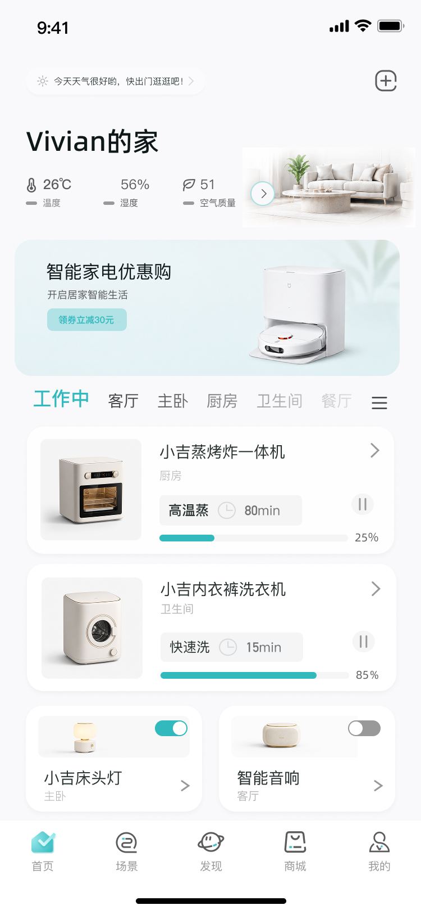
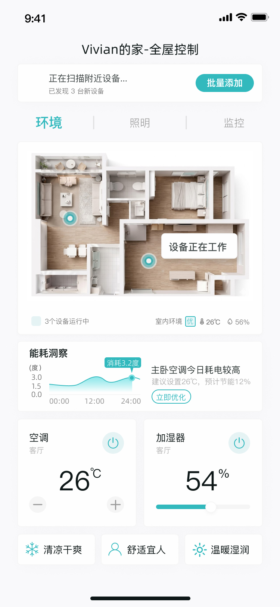
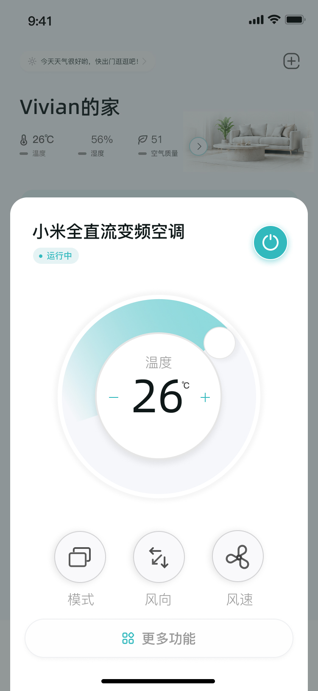
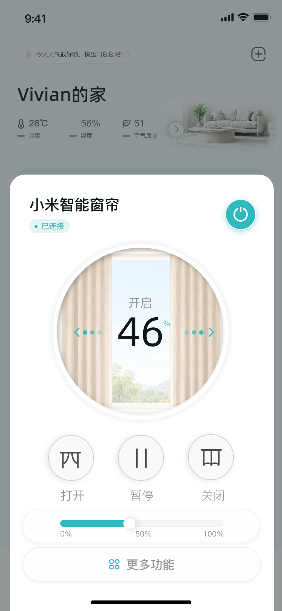
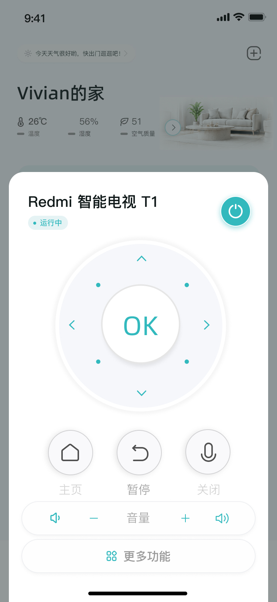
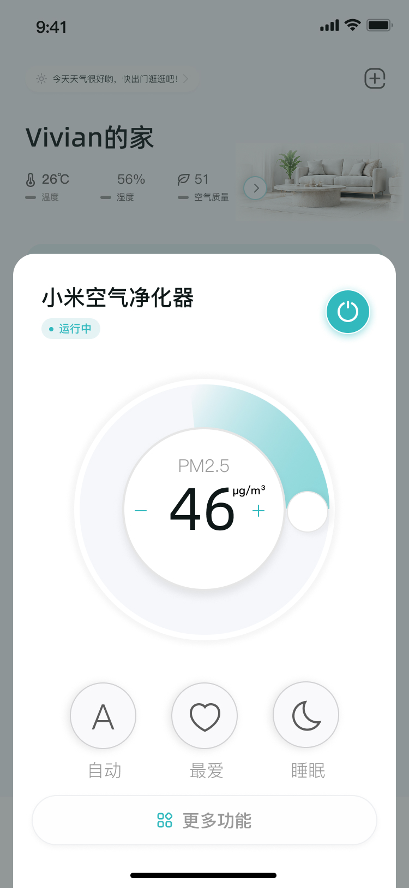
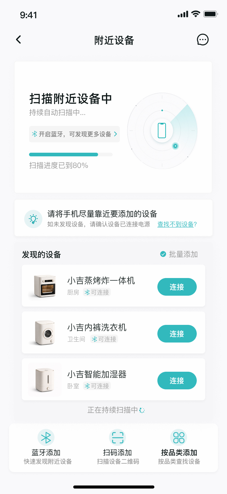
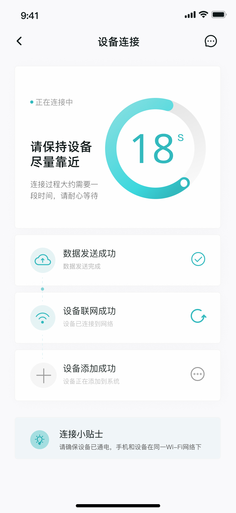
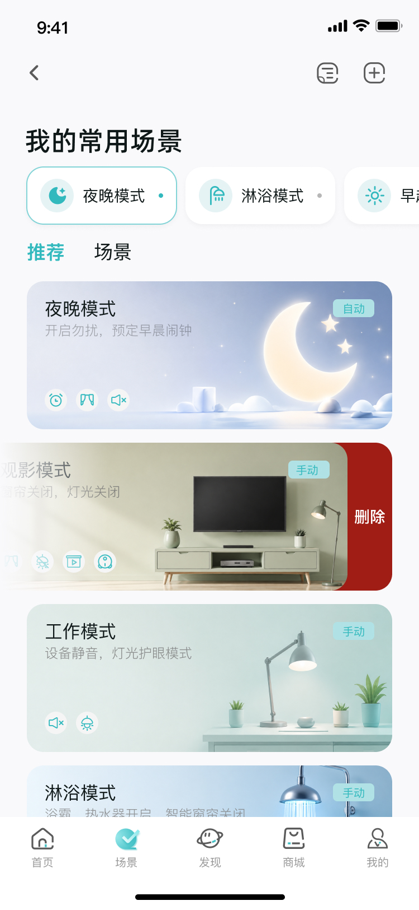
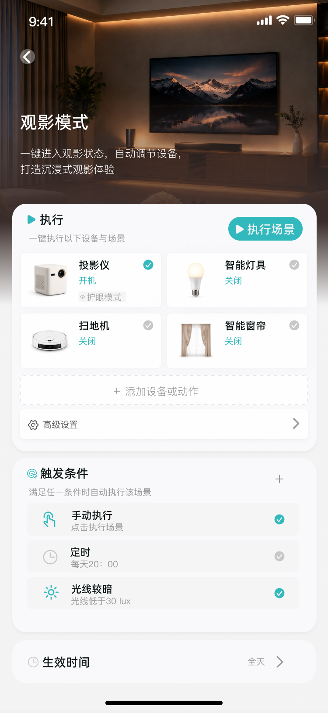
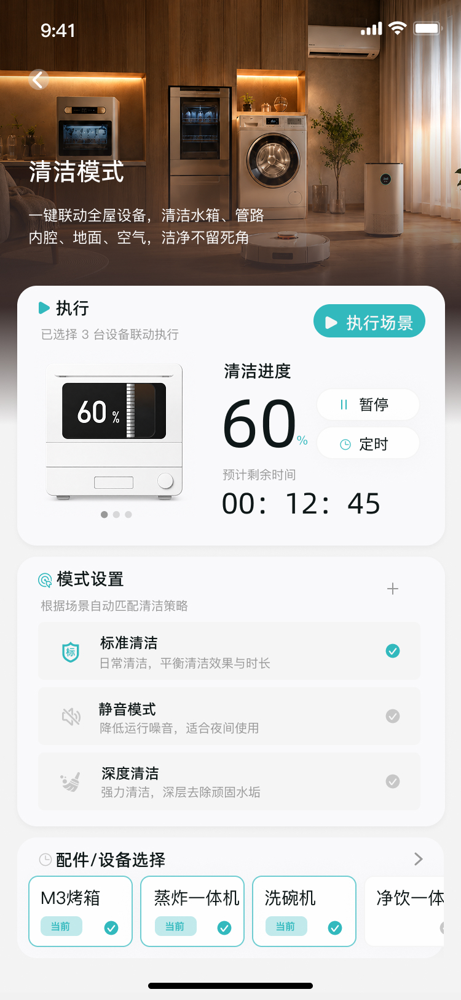
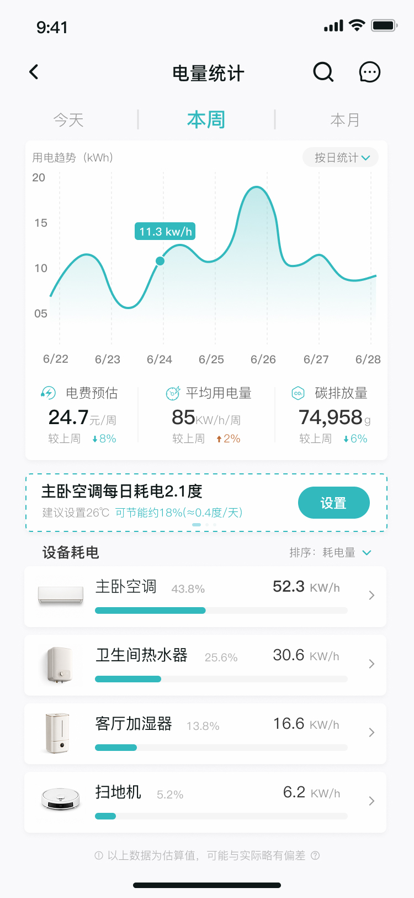
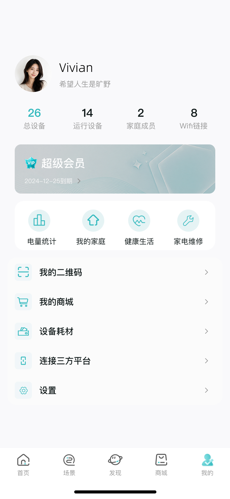
术语
| 术语 | 含义 |
|---|---|
| 能力模型 | 用 capabilities 描述设备支持哪些控制，如开关、温度、开合度、遥控；控件按能力渲染 |
| 设备影子 | 云端保存的设备期望状态与上报状态，用于离线与弱网场景 |
| 配网 | 把设备接入家庭 WiFi 并绑定到账号的过程，通常含蓝牙发现、WiFi 下发、云端注册 |
| 乐观更新 | 先更新 UI，再等服务端确认；失败时回滚 |
| KR | Key Result，可量化的关键结果，如「状态识别耗时下降 30%」 |
| 场景执行器 | 按顺序执行场景动作、记录逐项状态、处理失败的运行时 |
说明：本报告基于 13 张 JPG 设计稿与两份 PDF 文档推断，未包含商业目标、硬件方案与完整需求文档。 技术选型以「个人或小团队在 2–4 周内做出可演示产品」为前提；PDF2 的量化数据属于设计团队的验证结果， 本报告仅将其作为设计目标与验收任务引用。技术路线为 uni-app + Vue 3 微信小程序优先；设计输入只有 13 张 JPG，无 Figma 文件。